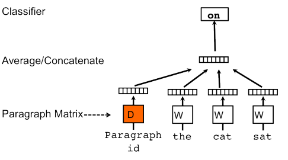

layout: true class: center --- class: middle background-color: white .title[Social Media Text Networks] .subtitle[How to do it and when you should: from trolls to journalists] .author[Laila A. Wahedi, PhD] .date[November 1, 2018] .institution[McCourt School of Public Policy, Georgetown University] <img style="width:20%" src="../figures/seal.png"> .center[] .footnote[ Created with [{Remark.js}](http://remarkjs.com/) using [{Markdown}](https://daringfireball.net/projects/markdown/) + [{MathJax}](https://www.mathjax.org/) + [{Liminal}](http://www.jmlilly.net/liminal.zip) ] --- layout: true name: main class: center .footnote_left[ » Slides at https://wahedi.us under <i>Current Presentation</i> ] .footnote_right[ Laila A. Wahedi • @lwahedi • law98@georgetown.edu ] --- template: main background-color: #F2DC5D <div> <h1> Motivation: Why Social Media Data?</h1> <div style="width:65%; margin: 0 auto"> <img style="width:75%" src="../figures/net_text/observe.png"> <h2 style="color:black;">Observe Interactions</h2> </div> </div> --- template: main background-color: #AF002B <div> <h1 style='color:white'>Motivation: Why Social Media Data?</h1> <div style="width:50%; float:left;" > <h2 style="color:white;">Not All The Same</h2> </div> <div style="width:50%; float:left;" > <img style="width:70%" src="../figures/net_text/compare.png"> <h2 style="color:white;">Relation ≠ Social</h2> </div> </div> --- template: main background-color: #01BAEF <h2 class="header">Today: Text-Based Constructions</h2> <img src="../figures/line.png" class="underline"> <div style="width:80%; margin: 0 auto;"> <table> <tr> <td></td> <td><img style="width:75%" src="../figures/net_text/observe_bipartite.png"></td> <td><img style="width:75%" src="../figures/net_text/observe_content.png"></td> </tr> <tr> <td><h3 style="color:white;">Author Similarity</h3></td> <td><h3 style="color:white;">Topic Bipartite</h3></td> <td><h3 style="color:white;">Content Similarity</h3></td> </tr> </table> </div> --- template: main background-color: #01BAEF <div style="width:100%;"> <br> <br><br> <h2 style="color:white; text-align:left; margin-bottom:0px">Before Constructing a Network...</h2> <br><br> <h2 style="color:white; text-align:right; margin-bottom:0px">What Do We Want From Relational Data?</h2> <br><br> <div style="width:50%; margin:0 auto"> <img style="width:70%" src="../figures/net_text/connection.png"> </div> </div> --- layout: true name: analysis template: main background-color: #01BAEF <div style="width:100%;"> <h1 style='color:white'>Types of Analysis:</h1> <div style="width:95%; margin:0 auto;" > {{content}} </div> </div> --- --- --- --- --- --- --- --- ---  --- layout: false template: main background-color: #01BAEF class: center <h2 class="header">Social vs Other Relational Data:</h2> <img src="../figures/line.png" class="underline"> <div style="width:100%; margin: 0 auto;"> <table> <tr> <td><img style="width:90%" src="../figures/net_text/compare.png"></td> <td><img style="width:100%" src="../figures/net_text/differences.png"></td> <td></td> <td></td> </tr> <tr> <td><h3 style="font-size:1em;color:white;">Compare Attributes / Behaviors</h3></td> <td><h3 style="font-size:1em;color:white;">Effect of Similarity in Attribute</h3></td> <td><h3 style="font-size:1em;color:white;">Relationships between Attributes</h3></td> <td><h3 style="font-size:1em;color:white;">Distribution of Attribute Values</h3></td> </tr> <tr> <td colspan=4> </td> </tr> <tr> <td> </td> <td colspan=3 style="text-align:right;"> <h3 style="color:white;">Same methods / metrics, <br>different meanings</h3> </td> </tr> </table> </div> --- template: main background-color: #01BAEF <h2 class="header">Author Similarity: What?</h2> <img src="../figures/line.png" class="underline"> <div style="width:100%; margin: 0 auto;"> <table> <tr> <td><img style="width:70%" src="../figures/net_text/text_mat.png"></td> <td><img style="width:100%" src="../figures/net_text/protractor.png"></td> <td><img style="width:55%" src="../figures/net_text/connection.png"></td> </tr> <tr> <td><h3 style="font-size:1em;color:white;">1. Create Author Vectors</h3></td> <td><h3 style="font-size:1em;color:white;">2. Calculate Distance</h3></td> <td><h3 style="font-size:1em;color:white;">3. Weighted / Thresholded Network</h3></td> </tr> <tr> <td colspan=4> </td> </tr> <tr> <td> </td> <td colspan=3 style="text-align:right;"> <h3 style="color:white;">Relate Authors By Rhetoric</h3> </td> </tr> </table> </div> --- template: main background-color: #01BAEF <h2 class="header">Author Similarity: What?</h2> <img src="../figures/line.png" class="underline"> <div style="width:100%;"> <h3 style="text-align:left; color:white;margin-bottom:0.7em;"> Captures variation in how individuals speak</h3> <table> <tr> <td><div class="redbutton"><h3 style = "color:white; margin:.5em">Dialect / Region</h3></div></td> <td><div class="redbutton"><h3 style = "color:white; margin:.5em">Education / Profession</h3></div></td> <td><div class="redbutton"><h3 style = "color:white; margin:.5em">Ideological Grouping</h3></div></td> </tr> <tr> <td><div class="redbutton"><h3 style = "color:white; margin:.5em">Age</h3></div></td> <td><div class="redbutton"><h3 style = "color:white; margin:.5em">Topic</h3></div></td> <td><div class="redbutton"><h3 style = "color:white; margin:.5em">Subculture</h3></div></td> </tr> </table> </div> <div> <br><br> </div> <div style="width:100%;"> <h3 style="text-align:left; color:white;margin-bottom:0.7em;"> Depends on Sample Variation</h3> <table> <tr> <td style="width:50%;"> <div class="redbutton"><h3 style = "color:white; margin:.5em">Academic Twitter vs Random Sample</h3></div> </td> <td style="width:50%;"> <div class="redbutton"><h3 style = "color:white; margin:.5em">#maga vs<br> #trump</h3></div> </td> </tr> </table> </div> --- template: main background-color: #01BAEF <h2 class="header">Author Similarity: Why?</h2> <img src="../figures/line.png" class="underline"> <div style="width:100%;"> <table> <tr> <td><img style="width:80%" src="../figures/net_text/media_compare.png"></td> <td><img style="width:80%" src="../figures/net_text/hats.png"></td> <td><img style="width:80%" src="../figures/net_text/hats_grp.png"></td> </tr> <tr> <td class="narrow"><h3 style="font-size:1em;letter-spacing:0.01em;color:white;">Subcultures Exposed to Similar Content</h3></td> <td class="narrow"><h3 style="font-size:1em;letter-spacing:0.01em;color:white;">Capture Unobserved Similarities</h3></td> <td class="narrow"><h3 style="font-size:1em;letter-spacing:0.01em;color:white;">Relationships between Subcultures</h3></td> </tr> <tr> <td colspan=3> </td> </tr> <tr> <td colspan=3 style="text-align:right;"><h3 style="color:white;">Not independent,<br>Even if not social media friends </h3></td> </tr> </table> </div> --- template: main background-color: #01BAEF <h2 class="header">Author Similarity: How? Author Vectors</h2> <img src="../figures/line.png" class="underline"> <h3 style="text-align:left; color:white;"> Start with Word Embeddings</h3> <div style="width:100%; float:left"> <img style="width:75%" src="../figures/net_text/word2vec.gif"> <p style="font-size:0.8em;color:white; ">From: <a href="https://multithreaded.stitchfix.com/blog/2016/05/27/lda2vec/"> https://multithreaded.stitchfix.com/blog/2016/05/27/lda2vec/ </a> </p> </div> --- template: main background-color: #01BAEF <h2 class="header">Author Similarity: How? Author Vectors</h2> <img src="../figures/line.png" class="underline"> <h3 style="text-align:left; color:white;"> Add a Vector for Author</h3> <div style="width:100%; float:left">  <p style="font-size:0.8em;color:white; ">From: <a href="https://medium.com/scaleabout/a-gentle-introduction-to-doc2vec-db3e8c0cce5e"> https://medium.com/scaleabout/a-gentle-introduction-to-doc2vec-db3e8c0cce5e </a> </p> </div> --- template: main background-color: #01BAEF <h2 class="header">Author Similarity: How? Author Vectors</h2> <img src="../figures/line.png" class="underline"> <div style="width:100%;"> <h3 style="text-align:left; color:white;margin-bottom:0.7em;"> Calculate Distance</h3> <table style="width:85%;"> <tr> <td> <h3 style = "font-size:0.5em;color:white;margin-top:0px;margin-bottom:0px;">Credit: Wikipedia</h3> </td> <td style="width:15%;"></td> <td><img style="width:40%" src="../figures/net_text/hats.png"></td> </tr> <tr> <td><h3 style = "font-size:1em;color:white;">Cosine Similarity</h3></td> <td style="width:15%;"></td> <td><h3 style = "font-size:1em;color:white;">Euclidean Distance<br>(Check Scale)</h3></td> </tr> </table> </div> <div style="width:100%;"> <h3 style="text-align:left; color:white;margin-bottom:0.7em;"> Construct Network</h3> <table style="width:85%"> <tr> <td></td> <td style="width:15%;"></td> <td></td> </tr> <tr> <td><h3 style = "font-size:1em;color:white;">Weighted</h3></td> <td style="width:15%;"></td> <td><h3 style = "font-size:1em;color:white;">Threshold</h3></td> </tr> </table> </div> --- template: main background-color: #AF002B <h2 class="header">Caution: Author Vectors</h2> <img src="../figures/line.png" class="underline"> <div style="width:80%;margin:0 auto;"> <table> <tr> <td style="padding-right: 25;"></td> <td style="padding-left: 25;"></td> </tr> <tr> <td style="padding-right: 25;"><h3 style = "font-size:1em;color:white;">Need Lots of Data</h3></td> <td style="padding-left: 25;"><h3 style = "font-size:1em;color:white;">Tweets Are Noisy</h3></td> </tr> </table> </div> --- template: main background-color: #01BAEF <h2 class="header">Author Similarity: How? <br>N-Gram Comparison</h2> <img src="../figures/line.png" class="underline"> <div style="width:50%; float:center"> <h4 style = "color:white; ">With a Bag of n-Grams...</h4> </div> <div style="width:100%;"> <h3 style="text-align:left; color:white;margin-bottom:0.7em;"> Calculate Distance:</h3> <table> <tr style="padding-top: 0px"> <td style="width:25%;vertical-align:middle;padding-left:0px;padding-right:7px;"> <div class="redbutton"> <h3 style="font-size:1em;color:white;margin:.5em;letter-spacing:0.01em;">Unique shared n-grams in support range (undirected)</h3> </div> </td> <td style="width:28%;vertical-align:middle;padding-left:7px;padding-right:7px;"> <div class="redbutton"> <h3 style="font-size:1em;color:white;margin:.5em;letter-spacing:0.01em;">Shared n-grams instances in support range (undirected)</h3> </div> </td> <td style="width:20%;vertical-align:middle;padding-left:7px;padding-right:7px;"> <div class="redbutton"> <h3 style="font-size:1em;color:white;margin:.5em;letter-spacing:0.01em;">Percentage of n-grams in common (directed)</h3> </div> </td> <td style="width:27%;vertical-align:middle;padding-left:7px;padding-right:0px;"> <div class="redbutton"> <h3 style="font-size:1em;color:white;margin:.5em;letter-spacing:0.01em;">Number / percent of posts with common n-gram</h3> </div> </td> </tr> </table> </div> --- template: main background-color: #01BAEF <h2 class="header">Author Similarity: Insights</h2> <img src="../figures/line.png" class="underline"> <div style="width:100%;float:center;"> <span style="width:50%;float:center;"> <h2 style = "color:white;">Centralization</h2> </span> </div> <div style="width:100%;"> <table> <tr style="padding-top: 0px"> <td style="width:40%;vertical-align:middle;"> <div class="redbutton" style="padding-top:10px;padding-bottom:10px;"> <h3 style="font-size:1em;color:white;margin:.5em;letter-spacing:0.01em;">Uninformative Vectors.<br>Check Text Quantity/Quality</h3> </div> </td> <td style="width:40%;vertical-align:middle;"> <div class="redbutton"> <h3 style="font-size:1em;color:white;margin:.5em;letter-spacing:0.01em;"> <br>Core of Generalists<br> </h3> </div> </td> </tr> </table> </div> --- template: main background-color: #01BAEF <h2 class="header">Author Similarity: Insights</h2> <img src="../figures/line.png" class="underline"> <div style="width:100%;float:center;"> <span style="width:50%;float:center;"> <h2 style = "color:white;">Strong Clustering</h2> </span> </div> <div style="width:100%;"> <table> <tr style="padding-top: 0px"> <td style="width:40%;vertical-align:middle;"> <div class="redbutton" style="padding-top:10px;padding-bottom:10px;"> <h3 style="font-size:1em;color:white;margin:.5em;letter-spacing:0.01em;">Segregate Based On Rhetoric. Possible Sub-cultures</h3> </div> </td> <td style="width:40%;vertical-align:middle;"> <div class="redbutton" style="padding-top:10px;padding-bottom:10px;"> <h3 style="font-size:1em;color:white;margin:.5em;letter-spacing:0.01em;">Do individuals follow or interact across sub-cultures?</h3> </div> </td> </tr> </table> </div> --- template: main background-color: #01BAEF <h2 class="header">Author Similarity: Insights</h2> <img src="../figures/line.png" class="underline"> <div style="width:100%;float:center;"> <span style="width:50%;float:center;"> <h2 style = "color:white;">Decentralized</h2> </span> </div> <div style="width:100%;"> <h3 style="font-size:1em;color:white;margin:.5em;letter-spacing:0.01em;text-align:left;">High Clustering Coefficient</h3> <table> <tr style="padding-top: 0px"> <td style="width:43%;vertical-align:middle;"> <div class="redbutton" style="padding-top:10px;padding-bottom:10px;"> <h3 style="font-size:1em;color:white;margin:.5em;letter-spacing:0.01em;">High Similarity. Check that author vectors are informative. Sufficient data?</h3> </div> </td> <td style="width:43%;vertical-align:middle;"> <div class="redbutton" style="padding-top:10px;padding-bottom:10px;"> <h3 style="font-size:1em;color:white;margin:.5em;letter-spacing:0.01em;">May be a homogenous, (or very heterogenous) population.</h3> </div> </td> </tr> </table> <h3 style="font-size:1em;color:white;margin:.5em;letter-spacing:0.01em;text-align:left;">Low Clustering Coefficient </h3> <table> <tr style="padding-top: 0px"> <td style="width:40%;vertical-align:middle;"> <div class="redbutton" style="padding-top:10px;padding-bottom:10px;"> <h3 style="font-size:1em;color:white;margin:.5em;letter-spacing:0.01em;">Individuals who speak similarly are not similar to others like them. Sufficient data?</h3> </div> </td> <td style="width:40%;vertical-align:middle;"> <div class="redbutton" style="padding-top:10px;padding-bottom:10px;"> <h3 style="font-size:1em;color:white;margin:.5em;letter-spacing:0.01em;">May be capturing topics, if population discusses random distribution of topics (Unlikely).</h3> </div> </td> </tr> </table> </div> --- template: main background-color: #01BAEF <h2 style="text-transform: none; text-align:left; margin-bottom:0px; color:white;">Author Similarity: Insights</h2> <img class="plain" src="../figures/line.png" style="float:left; padding:0;margins:0;margin-bottom:0px; height: 5px; width:76%"><br> <center><div style="width:100%; "> <div style="width:50%;"> <img style="width:30%; margin-bottom:0px; " src="../figures/net_text/centrality.png"> <h2 style = "color:white;">Centrality </h2> </div> </div></center> <div style="width:100%; margin-bottom:1em"> <h4 style = "color:white;margin-bottom:0px; text-align:left">Degree, Closeness</h4> <div style="width:48%; float:left; background-color:#AF002B; border: 5px solid #FFFFFF; border-radius: 25px;"> <h4 style = "color:white; ">High: more general user, or less informative vector</h4> </div> <div style="width:48%; float:left; background-color:#AF002B; border: 5px solid #FFFFFF; border-radius: 25px;"> <h4 style = "color:white;margin-bottom:2.5em">Low: More distinct</h4> </div> </div> <br> <div style="width:100%;"> <h4 style = "color:white; text-align: left; margin-bottom:0px; margin-top:1em">Betweenness</h4> <div style="width:48%; float:left; background-color:#AF002B; border: 5px solid #FFFFFF; border-radius: 25px;"> <h4 style = "color:white; ">Fits in multiple sub-cultures</h4> </div> </div> --- template: main background-color: #01BAEF <h2 style="text-transform: none; text-align:left; margin-bottom:0px; color:white;">Author Similarity: Questions</h2> <img class="plain" src="../figures/line.png" style="float:left; padding:0;margins:0;margin-bottom:0px; height: 5px; width:76%"> <h3 style="text-transform: none; text-align:left; color:white;">As Dependent Variable</h3> <div style="width:48%; border: 5px solid #FFFFFF; border-radius: 25px; background-color:#AF002B; float:left"> <h4 style = "color:white; margin:.5em">What nodal attributes push someone to the edge of a subculture?</h4> </div> <div style="width:48%; border: 5px solid #FFFFFF; border-radius: 25px; background-color:#AF002B; float:left"> <h4 style = "color:white; margin:.5em">Is there more homogeneity among the users of different hashtags?</h4> </div> <div style="width:48%; border: 5px solid #FFFFFF; border-radius: 25px; background-color:#AF002B; float:left"> <h4 style = "color:white; margin:.5em">What sort of individuals bridge communities?</h4> </div> <div style="width:100%; "> <h2 style="text-align:left; margin-top:8em; color:white;">As Explanatory Variable</h2> <div style="width:48%; border: 5px solid #FFFFFF; border-radius: 25px; background-color:#AF002B; float:left"> <h4 style = "color:white; margin:.5em">Is there a relationship between clusters and sub-culture labels?</h4> </div> <div style="width:48%; border: 5px solid #FFFFFF; border-radius: 25px; background-color:#AF002B; float:left"> <h4 style = "color:white; margin:.5em">How do the resulting clusters relate to one another?</h4> </div> </div> --- template: main class: middle background-color: #78881f <h2 style="text-transform: none; text-align:left; margin-bottom:0px; color:white;">Russian Trolls</h2> <img class="plain" src="../figures/line.png" style="float:left; padding:0;margins:0;margin-bottom:0px; height: 5px; width:76%"><br> <h2 style="text-transform: none; text-align:left; color:white;">What can we learn about Russian information operations by observing their activity online?</h2> --- template: main background-color: #78881f <h2 style="text-transform: none; text-align:left; margin-bottom:0px; color:white;">Russian Trolls</h2> <img class="plain" src="../figures/line.png" style="float:left; padding:0;margins:0;margin-bottom:0px; height: 5px; width:76%"> <br> <h3 style="text-transform: none; text-align:left; color:white;">Data: ~3M tweets from ~3k known accounts from the Internet Research Agency</h3> <h4 style="text-transform: none; text-align:right; color:white;"> Released by FiveThirtyEight and <br>The Clemson Social Media Listening Center</h4> <h3 style="text-transform: none; text-align:left; color:white;">Do have</h3> <div style="width:31%; border: 5px solid #FFFFFF; border-radius: 25px; background-color:#01BAEF; float:left"> <h4 style = "color:white; margin:.5em">Tweet text and time</h4> </div> <div style="width:31%; border: 5px solid #FFFFFF; border-radius: 25px; background-color:#01BAEF; float:left"> <h4 style = "color:white; margin:.5em">Url redirects</h4> </div> <div style="width:31%; border: 5px solid #FFFFFF; border-radius: 25px; background-color:#01BAEF; float:left"> <h4 style = "color:white; margin:.5em">Is quote or retweet</h4> </div> <br> <div style="clear: both; float: left; display: block; position: relative; margin-top: 2em"> <h3 style="text-transform: none; text-align:left; color:white;display:inline-block;clear:both;">Don't have</h3> </div> <div style="clear: both; float: left; display: block; position: relative;width:100%"> <div style="width:31%; border: 5px solid #FFFFFF; border-radius: 25px; background-color:#AF002B; float:left"> <h4 style = "color:white; margin:.5em">Friends / Followers</h4> </div> <div style="width:31%; border: 5px solid #FFFFFF; border-radius: 25px; background-color:#AF002B; float:left"> <h4 style = "color:white; margin:.5em">Retweet user id</h4> </div> <div style="width:31%; border: 5px solid #FFFFFF; border-radius: 25px; background-color:#AF002B; float:left"> <h4 style = "color:white; margin:.5em">Interactions</h4> </div> </div> --- template: main background-color: #78881f <h2 style="text-transform: none; text-align:left; margin-bottom:0px; color:white;">Russian Trolls</h2> <img class="plain" src="../figures/line.png" style="float:left; padding:0;margins:0;margin-bottom:0px; height: 5px; width:76%"> <br> <h2 style="text-transform: none; text-align:left; color:white;">What can we learn about how the IRA operated?</h2> <h3 style="text-transform: none; text-align:left; color:white;">Can we distinguish authors?</h3> <h4 style="text-transform: none; text-align:right; color:white;"> If agents handle multiple accounts, <br>may observe similarities in phrasing and rhetoric</h4> <h4 style="text-transform: none; text-align:right; color:white;"> Alternatively: Agents may share accounts or<br> develop unique personas for each.</h4> <img class="plain" src="../figures/line.png" style="float:left; padding:0;margins:0;margin-bottom:0px; height: 5px; width:76%"><br> <h2 style="text-transform: none; text-align:left; color:white;">How coordinated were the operations?</h2> <h3 style="text-transform: none; text-align:left; color:white;">Can we distinguish classes of account with similar purposes?</h3> <h4 style="text-transform: none; text-align:right; color:white;"> If accounts are created for specific purposes, <br>expect them to use similar language</h4> --- template: main background-color: #78881f <h2 style="text-transform: none; text-align:left; margin-bottom:0px; color:white;">Russian Trolls</h2> <img class="plain" src="../figures/line.png" style="float:left; padding:0;margins:0;margin-bottom:0px; height: 5px; width:76%"> <br> <div style="width:100%;"> </div> --- template: main background-color: #01BAEF <h2 style="text-transform: none; text-align:left; margin-bottom:0px; color:white;">Topic Bipartite: What? </h2> <img class="plain" src="../figures/line.png" style="float:left; padding:0;margins:0;margin-bottom:0px; height: 5px; width:76%"> <div style="width:100%"> <div style="width:33%; float:left"> <h3 style = "color:white; ">1. Topic Model</h3> </div> <div style="width:33%; float:left"> <img style="width:75%" src="../figures/net_text/bipartite_net.png"> <h3 style = "color:white; ">2. Ties from user to topic</h3> </div> <div style="width:33%; float:left"> <img style="width:75%" src="../figures/net_text/projection.png"> <h3 style = "color:white; ">3. Optional: Project to unipartite</h3> </div> </div> <div style="width:100%; "> <h2 style="text-align:right; margin-top:10em; color:white;">What makes authors similar? <br> How do topics relate?</h2> </div> --- template: main background-color: #01BAEF <h2 style="text-transform: none; text-align:left; margin-bottom:0px; color:white;">Topic Bipartite: Why?</h2> <img class="plain" src="../figures/line.png" style="float:left; padding:0;margins:0;margin-bottom:0px; height: 5px; width:76%"> <div style="width:100%"> <div style="width:33%; float:left"> <h4 style = "color:white; ">What are people talking about?</h4> </div> <div style="width:33%; float:left"> <img style="width:75%" src="../figures/net_text/connection.png"> <h4 style = "color:white; ">How do people cluster<br> around topics?</h4> </div> <div style="width:33%; float:left"> <h4 style = "color:white; ">How do topics <br>cluster?</h4> </div> </div> <div style="width:100%; "> <h2 style="text-align:right; margin-top:10em; color:white;">Describe the structure of <br>the rhetorical space<br> </h2> </div> --- template: main background-color: #01BAEF <h2 style="text-transform: none; text-align:left; margin-bottom:0px; color:white;">Topic Bipartite: Insights</h2> <img class="plain" src="../figures/line.png" style="float:left; padding:0;margins:0;margin-bottom:0px; height: 5px; width:76%"><br> .left-column[ <center><div style="width:100%; "> <div style="width:100%;"> <h2 style = "color:white;">Centralization</h2> </div> </div></center> <br> <div style="width:100%; "> <div style="width:95%; float:left; background-color:#AF002B; border: 5px solid #FFFFFF; border-radius: 25px;"> <h4 style = "color:white; ">Some topics are universal, while others are more niche</h4> </div> </div>] .right-column[ <center><div style="width:100%; "> <div style="width:100%;"> <h2 style = "color:white;">Strong Clustering</h2> </div> </div></center> <br> <div style="width:100%; "> <div style="width:95%; float:left; background-color:#AF002B; border: 5px solid #FFFFFF; border-radius: 25px;"> <h4 style = "color:white; text-align:center;">Insular communities sharing very different information. Polarization</h4> </div> <br> <h2 style = "color:white;">Weak Clustering</h2> </div> <div style="width:100%; "> <div style="width:95%; float:left; background-color:#AF002B; border: 5px solid #FFFFFF; border-radius: 25px;"> <h4 style = "color:white; text-align:center">Many topics discussed across whole network. Homogenous information environment</h4> </div> </div>] --- template: main background-color: #01BAEF <h2 style="text-transform: none; text-align:left; margin-bottom:0px; color:white;">Topic Bipartite: Insights</h2> <img class="plain" src="../figures/line.png" style="float:left; padding:0;margins:0;margin-bottom:0px; height: 5px; width:76%"><br> <center><div style="width:100%; "> <div style="width:50%;"> <img style="width:30%; margin-bottom:0px; " src="../figures/net_text/centrality.png"> <h2 style = "color:white;">Centrality </h2> </div> </div></center> <div style="width:100%; margin-bottom:1em"> <h4 style = "color:white;margin-bottom:0px; text-align:left">Degree, Closeness</h4> <div style="width:48%; float:left; background-color:#AF002B; border: 5px solid #FFFFFF; border-radius: 25px;"> <h4 style = "color:white;margin-bottom:2.4em ">Bipartite: General topic, transcends insular communities</h4> </div> <div style="width:48%; float:left; background-color:#AF002B; border: 5px solid #FFFFFF; border-radius: 25px;"> <h4 style = "color:white;">Projection: General topic, or related many others within a cluster</h4> </div> </div> <div style=" float: left; width:100%"> <h4 style = "color:white; text-align: left; margin-bottom:0px; margin-top:1em">Betweenness</h4> <div style="width:48%; float:left; background-color:#AF002B; border: 5px solid #FFFFFF; border-radius: 25px;"> <h4 style = "color:white;margin-bottom:3.4em ">Bridges communities </h4> </div> <div style="width:48%; float:left; background-color:#AF002B; border: 5px solid #FFFFFF; border-radius: 25px;"> <h4 style = "color:white; ">Possible common ground in distinct information environments </h4> </div> </div> --- template: main background-color: #78881f <h2 style="text-transform: none; text-align:left; margin-bottom:0px; color:white;">Russian Trolls</h2> <img class="plain" src="../figures/line.png" style="float:left; padding:0;margins:0;margin-bottom:0px; height: 5px; width:76%"> <br> <h2 style="text-transform: none; text-align:left; color:white;">What can we learn about how the IRA operated?</h2> <h2 style="text-transform: none; text-align:left; color:white;">How coordinated were the operations?</h2> <h3 style="text-transform: none; text-align:left; color:white;">To what extent do the trolls communicate unified messages? </h3> <h4 style="text-transform: none; text-align:right; color:white;">If well coordinated, we expect to see groups of trolls <br>promoting similar topics.</h4> <img class="plain" src="../figures/line.png" style="float:left; padding:0;margins:0;margin-bottom:0px; height: 5px; width:76%"><br> <h4 style="text-transform: none; text-align:left; color:white;">Note: topic modeling on Twitter data notoriously hard. Demonstrating with hashtags.</h4> --- template: main background-color: #78881f <h2 style="text-transform: none; text-align:left; margin-bottom:0px; color:white;">Russian Trolls</h2> <img class="plain" src="../figures/line.png" style="float:left; padding:0;margins:0;margin-bottom:0px; height: 5px; width:76%"> <br> <div style="width:100%;"> <img style="width:80%;max-height:100%" src="../figures/net_text/dynamic_troll_bipart.gif"> </div> --- template: main background-color: #01BAEF <h2 style="text-transform: none; text-align:left; margin-bottom:0px; color:white;">Content Similarity: What? </h2> <img class="plain" src="../figures/line.png" style="float:left; padding:0;margins:0;margin-bottom:0px; height: 5px; width:76%"> <div style="width:100%"> <div style="width:33%; float:left"> <h3 style = "color:white; ">1. Posts to vectors</h3> </div> <div style="width:33%; float:left"> <img style="width:75%" src="../figures/net_text/protractor.png"> <h3 style = "color:white; ">2. Calculate Similarity</h3> </div> <div style="width:33%; float:left"> <img style="width:75%" src="../figures/net_text/connection.png"> <h3 style = "color:white; ">3. Aggregate to network</h3> </div> </div> <div style="width:100%; "> <h2 style="text-align:right; margin-top:10em; color:white;">Focused on author content, <br> Not author, or content individually</h2> </div> --- template: main background-color: #01BAEF <h2 style="text-transform: none; text-align:left; margin-bottom:0px; color:white;">Content Similarity: Why?</h2> <img class="plain" src="../figures/line.png" style="float:left; padding:0;margins:0;margin-bottom:0px; height: 5px; width:76%"> <div style="width:100%"> <div style="width:33%; float:left"> <img style="width:75%" src="../figures/net_text/connection.png"> <h4 style = "color:white; ">How authors relate short term</h4> </div> <div style="width:33%; float:left"> <h4 style = "color:white; ">Focus on behavior rathern than topic</h4> </div> <div style="width:33%; float:left"> <h4 style = "color:white; ">Examine cascades and information diffusion</h4> </div> </div> <div style="width:100%; "> <h2 style="text-align:right; margin-top:10em; color:white;">Middleground between <br>author and topic focus </h2> </div> --- template: main background-color: #01BAEF <h2 style="text-transform: none; text-align:left; margin-bottom:0px; color:white;">Content Similarity: How? Author Vectors?</h2> <img class="plain" src="../figures/line.png" style="float:left; padding:0;margins:0;margin-bottom:2em; height: 5px; width:76%"> <br> <h3 style="text-transform: none; text-align:left; color:white;float:left; margin-bottom:3em"> Train author-time embeddings?</h3> -- template: main background-color:#AF002B <div style="width:100%; float:left"> <div style="width:33%; float:left"> <h4 style = "color:white; ">Tweets are short</h4> </div> <div style="width:33%; float:left"> <h4 style = "color:white; ">Twitter cycle is fast</h4> </div> <div style="width:33%; float:left"> <h4 style = "color:white; ">Not enough data for meaningful vectors</h4> </div> </div> --- template: main background-color: #01BAEF <h2 style="text-transform: none; text-align:left; margin-bottom:0px; color:white;">Content Similarity: How?</h2> <img class="plain" src="../figures/line.png" style="float:left; padding:0;margins:0;margin-bottom:0px; height: 5px; width:76%"> <br> <h2 style="text-transform: none; text-align:left; margin-bottom:0px; color:white;float:left">N-gram Spikes</h2> <div style="width:100%; float:left"> <div style="width:33%; float:left"> <h4 style = "color:white; ">1. Identify n-grams more frequent at t than t-1</h4> </div> <div style="width:33%; float:left"> <img style="width:75%" src="../figures/net_text/collaboration.png"> <h4 style = "color:white; ">2. Tie from A to B if B uses n-gram in window after A</h4> </div> <div style="width:33%; float:left"> <h4 style = "color:white; ">Adjust threshold and time window to capture current events</h4> </div> </div> <div style="width:100%; "> <h2 style="text-align:right; margin-top:10em; color:white;">Capture cascade timing <br>rather than direct shares </h2> </div> --- template: main background-color: #01BAEF <h2 style="text-transform: none; text-align:left; margin-bottom:0px; color:white;">Content Similarity: Insights</h2> <img class="plain" src="../figures/line.png" style="float:left; padding:0;margins:0;margin-bottom:0px; height: 5px; width:76%"><br> .left-column[ <center><div style="width:100%; "> <div style="width:100%;"> <h2 style = "color:white;">Centralization</h2> </div> </div></center> <br> <div style="width:100%; "> <div style="width:95%; float:left; background-color:#AF002B; border: 5px solid #FFFFFF; border-radius: 25px;"> <h4 style = "color:white; ">Content originates with a few, diffuses, then peters out</h4> </div> </div>] .right-column[ <center><div style="width:100%; "> <div style="width:100%;"> <h2 style = "color:white;">Strong Clustering</h2> </div> </div></center> <br> <div style="width:100%; "> <div style="width:95%; float:left; background-color:#AF002B; border: 5px solid #FFFFFF; border-radius: 25px;"> <h4 style = "color:white; text-align:center;">Insular information sharing environment</h4> </div> <br> <h2 style = "color:white;">Weak Clustering</h2> </div> <div style="width:100%; "> <div style="width:95%; float:left; background-color:#AF002B; border: 5px solid #FFFFFF; border-radius: 25px;"> <h4 style = "color:white; text-align:center">Information can originate anywhere in cluster</h4> </div> </div>] --- template: main background-color: #01BAEF <h2 style="text-transform: none; text-align:left; margin-bottom:0px; color:white;">Content Similarity: Insights</h2> <img class="plain" src="../figures/line.png" style="float:left; padding:0;margins:0;margin-bottom:0px; height: 5px; width:76%"><br> <center><div style="width:100%; "> <div style="width:50%;"> <img style="width:30%; margin-bottom:0px; " src="../figures/net_text/centrality.png"> <h2 style = "color:white;">Centrality </h2> </div> </div></center> <div style="width:100%; margin-bottom:1em"> <div style="width:48%; float:left; background-color:#AF002B; border: 5px solid #FFFFFF; border-radius: 25px;"> <h4 style = "color:white;">High In-Degree: Not early adopter</h4> </div> <div style="width:48%; float:left; background-color:#AF002B; border: 5px solid #FFFFFF; border-radius: 25px;"> <h4 style = "color:white;">Low In-Degree: Either early adopter, or non-adopter</h4> </div> </div> <div style=" float: left; width:100%"> <div style="width:48%; float:left; background-color:#AF002B; border: 5px solid #FFFFFF; border-radius: 25px;"> <h4 style = "color:white; ">High Betweenness: Perpetuate during lull, promoter</h4> </div> <div style="width:48%; float:left; background-color:#AF002B; border: 5px solid #FFFFFF; border-radius: 25px;"> <h4 style = "color:white; ">High out-degree low in-degree: Early adopter, initiator</h4> </div> </div> --- template: main background-color: #6d288e <h2 style="text-transform: none; text-align:left; margin-bottom:0px; color:white;">Political Journalists</h2> <img class="plain" src="../figures/line.png" style="float:left; padding:0;margins:0;margin-bottom:0px; height: 5px; width:76%"> <br> <h2 style="text-transform: none; text-align:left; color:white;">Boys on the bus</h2> <div style="width:100%;"> </div> --- template: main class: middle background-color: #6d288e <h2 style="text-transform: none; text-align:left; margin-bottom:0px; color:white;">Political Journalists</h2> <img class="plain" src="../figures/line.png" style="float:left; padding:0;margins:0;margin-bottom:0px; height: 5px; width:76%"><br> <h2 style="text-transform: none; text-align:left; color:white;">What is the effect of Twitter friendships on journalist framing?</h2><br> <img class="plain" src="../figures/line.png" style="float:left; padding:0;margins:0;margin-bottom:0px; height: 5px; width:76%"><br> <h2 style="text-transform: none; text-align:left; color:white;">How do journalists interact on Twitter?</h2> <h4 style="text-transform: none; text-align:right; color:white;">Do they seek novel information, or confirmation?</h4> <h4 style="text-transform: none; text-align:right; color:white;">How selective are they for propagation of information?</h4> --- template: main background-color: #6d288e <h2 style="text-transform: none; text-align:left; margin-bottom:0px; color:white;">Political Journalists</h2> <img class="plain" src="../figures/line.png" style="float:left; padding:0;margins:0;margin-bottom:0px; height: 5px; width:76%"><br> <center><div style="width:100%; "> <div style="width:50%;"> <img style="width:30%; margin-bottom:0px; " src="../figures/net_text/centrality.png"> <h2 style = "color:white;">Effect of Twitter on Content</h2> </div> </div></center> <div style="width:100%; margin-bottom:1em"> <div style="width:48%; float:left; background-color:#AF002B; border: 5px solid #FFFFFF; border-radius: 25px;"> <h4 style = "color:white;">1. Identify bursty ngrams each day for 3 months around election</h4> </div> <div style="width:48%; float:left; background-color:#AF002B; border: 5px solid #FFFFFF; border-radius: 25px;"> <h4 style = "color:white;">2. Construct network: Ex] Tie from A to B if B uses "anti-choice" within an hour after A. </h4> </div> </div> <div style=" float: left; width:100%"> <div style="width:48%; float:left; background-color:#AF002B; border: 5px solid #FFFFFF; border-radius: 25px;"> <h4 style = "color:white; ">3. Compare to follower and retweet networks (Future)</h4> </div> <div style="width:48%; float:left; background-color:#AF002B; border: 5px solid #FFFFFF; border-radius: 25px;"> <h4 style = "color:white; ">4. Network model, p(tie_content| tie_follow) (Future)</h4> </div> </div> --- template: main background-color: #6d288e <h2 style="text-transform: none; text-align:left; margin-bottom:0px; color:white;">Political Journalists: Followers</h2> <img class="plain" src="../figures/line.png" style="float:left; padding:0;margins:0;margin-bottom:0px; height: 5px; width:76%"> <br> <div style="width:100%;"> </div> --- template: main background-color: #6d288e <h2 style="text-transform: none; text-align:left; margin-bottom:0px; color:white;">Political Journalists: Retweet</h2> <img class="plain" src="../figures/line.png" style="float:left; padding:0;margins:0;margin-bottom:0px; height: 5px; width:76%"> <br> <div style="width:100%;"> </div> --- template: main background-color: #6d288e <h2 style="text-transform: none; text-align:left; margin-bottom:0px; color:white;">Political Journalists</h2> <img class="plain" src="../figures/line.png" style="float:left; padding:0;margins:0;margin-bottom:0px; height: 5px; width:76%"> <br> <div style="width:100%;"> </div> --- template: main background-color: #F2DC5D <h2 style="text-transform: none; text-align:left; margin-bottom:0px; color:black;">Acknowledgements and Thanks</h2> <img class="plain" src="../figures/line.png" style="float:left; padding:0;margins:0;margin-bottom:0px; height: 5px; width:76%"><br> <h4 style = "color:black; ">Work in collaboration with Lisa Singh and the GU Data Lab</h4><br> <h4 style = "color:black; ">Work partially funded by a MIDAS grant</h4><br> <h4 style = "color:black; ">Icons made by or adapted from Freepik from www.flaticon.com is licensed by CC 3.0</h4>